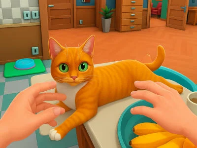

Cat Simulator: My Pets
Adopt, Care, and Play with Your Virtual Feline Friends!
About The Game
Cat Simulator: My Pets is a heartwarming virtual pet simulation game that lets you experience the joys of cat ownership. Adopt adorable cats of different breeds, care for their needs, play interactive games, and watch them grow. Create the perfect home for your feline friends and build lasting bonds in this engaging pet simulator.
Multiple Cat Breeds
Choose from various cat breeds with unique personalities
Home Customization
Design and decorate the perfect space for your pets
Pet Care System
Feed, groom, and nurture your cats to keep them happy
Key Features:
- Diverse collection of cat breeds
- Interactive play activities
- Customizable cat accessories
- Home decoration system
- Pet care mechanics
- Achievement system
- Mini-games and challenges
- Regular content updates
More Hot Games You Might Like
Game Features
Cat Collection
Adopt and care for multiple cat breeds
Accessories
Customize your cats with various items
Home Design
Create the perfect living space
Mini-Games
Enjoy various pet-themed activities
Frequently Asked Questions
How do I adopt new cats?
▼
Visit the adoption center in the game to choose from available cats. Each cat has unique traits and personalities. You can adopt multiple cats as you progress and unlock achievements!
What activities can I do with my cats?
▼
You can play various mini-games, groom your cats, feed them, decorate their living space, and dress them up in cute accessories. Each activity helps build your bond with your virtual pets!
How do I earn rewards?
▼
Complete daily tasks, achieve milestones, participate in events, and take good care of your pets to earn rewards. These can be used to unlock new items, accessories, and cat breeds!